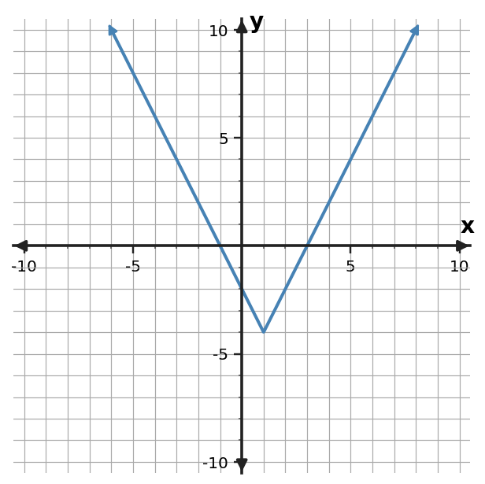

For $y=0.5|x-4|+2$, state the vertex and describe the rate of change on each side of the vertex.
For $y=0.5|x-4|+2$, state the vertex and describe the rate of change on each side of the vertex.
Vertex $(4,2)$; the left-hand slope is -0.5 and the right-hand slope is 0.5.
Use the symmetric table to locate the vertex and identify an absolute-value rule.
| $x$ | -4 | -3 | -2 | -1 | 0 |
|---|---|---|---|---|---|
| $y$ | 5 | 3 | 1 | 3 | 5 |
Use the symmetric table to locate the vertex and identify an absolute-value rule.
| $x$ | -4 | -3 | -2 | -1 | 0 |
|---|---|---|---|---|---|
| $y$ | 5 | 3 | 1 | 3 | 5 |
Vertex $(-2,1)$; one rule is $y=2|x+2|+1$.
For $f(x)=\begin{cases}-2x+5,&x\lt 0\\ x^2+1,&x\ge 0\end{cases}$, find $f(3)$ and identify which rule applies.
For $f(x)=\begin{cases}-2x+5,&x\lt 0\\ x^2+1,&x\ge 0\end{cases}$, find $f(3)$ and identify which rule applies.
$f(3)=10$; use the second rule because $3\ge0$.
A shipping service charges 8 dollars plus 2 dollars per pound for packages up to 6 pounds, then 20 dollars plus 1 dollar per pound beyond 6 pounds. Write a piecewise cost rule for weight $w\ge0$.
A shipping service charges 8 dollars plus 2 dollars per pound for packages up to 6 pounds, then 20 dollars plus 1 dollar per pound beyond 6 pounds. Write a piecewise cost rule for weight $w\ge0$.
$C(w)=8+2w$ for $0\le w\le6$, and $C(w)=20+(w-6)$ for $w\gt 6$.
A model gives walking distance from a trailhead as $d(t)=|3t-12|$ for a 5-hour hike. State a reasonable domain and explain why the algebraic rule should not be used for all real $t$. Explain what an input outside the interval would mean physically.
A model gives walking distance from a trailhead as $d(t)=|3t-12|$ for a 5-hour hike. State a reasonable domain and explain why the algebraic rule should not be used for all real $t$. Explain what an input outside the interval would mean physically.
A reasonable domain is $0\le t\le5$. Times outside the hike are not part of the situation.
Use the graph to state the vertex and x-intercepts of the absolute-value function. Then identify one interval where outputs decrease.

Use the graph to state the vertex and x-intercepts of the absolute-value function. Then identify one interval where outputs decrease.
Vertex $(1,-4)$; x-intercepts $(-1,0)$ and $(3,0)$. Outputs decrease for $x\lt1$ (equivalently on $(-\infty,1]$).
Find the two numbers that are 3 units from 5 by solving $|x-5|=3$.
Find the two numbers that are 3 units from 5 by solving $|x-5|=3$.
$x=2$ or $x=8$.
Explain how $y=|x|$ can be described with two linear rules, one for negative inputs and one for nonnegative inputs. Explain why the two rules meet at the origin.
Explain how $y=|x|$ can be described with two linear rules, one for negative inputs and one for nonnegative inputs. Explain why the two rules meet at the origin.
$y=-x$ for $x\lt 0$ and $y=x$ for $x\ge0$; the two lines meet at the vertex $(0,0)$.
For $y=2|x-1|+4$, state an interval where the function is decreasing and an interval where it is increasing.
For $y=2|x-1|+4$, state an interval where the function is decreasing and an interval where it is increasing.
Decreasing for $x\lt 1$; increasing for $x\gt 1$, with the turning point at $x=1$.
A machine part should have length 25 mm. Write an expression for the absolute deviation of an actual length $L$ from the target.
A machine part should have length 25 mm. Write an expression for the absolute deviation of an actual length $L$ from the target.
$|L-25|$.
For $y=2|x+1|+1$, state the vertex and describe the rate of change on each side of the vertex.
For $y=2|x+1|+1$, state the vertex and describe the rate of change on each side of the vertex.
Vertex $(-1,1)$; the left-hand slope is -2 and the right-hand slope is 2.
Use the symmetric table to locate the vertex and identify an absolute-value rule with scale factor 2.
| $x$ | -3 | -2 | -1 | 0 | 1 |
|---|---|---|---|---|---|
| $y$ | 4 | 2 | 0 | 2 | 4 |
Use the symmetric table to locate the vertex and identify an absolute-value rule with scale factor 2.
| $x$ | -3 | -2 | -1 | 0 | 1 |
|---|---|---|---|---|---|
| $y$ | 4 | 2 | 0 | 2 | 4 |
Vertex $(-1,0)$; one rule is $y=2|x+1|$.
For $f(x)=\begin{cases}2x+3,&x\lt 2\\-x+9,&x\ge 2\end{cases}$, find $f(-2)$ and identify which rule applies.
For $f(x)=\begin{cases}2x+3,&x\lt 2\\-x+9,&x\ge 2\end{cases}$, find $f(-2)$ and identify which rule applies.
$f(-2)=-1$; use the first rule because -2 < 2.
A shipping service charges 7 dollars plus 2 dollars per pound through 5 pounds, then 17 dollars plus 1 dollar for each pound beyond 5. Write a piecewise rule for weight $w\ge0$.
A shipping service charges 7 dollars plus 2 dollars per pound through 5 pounds, then 17 dollars plus 1 dollar for each pound beyond 5. Write a piecewise rule for weight $w\ge0$.
$C(w)=7+2w$ for $0\le w\le5$, and $C(w)=17+(w-5)$ for $w\gt 5$.
A model gives walking distance from a trailhead as $d(t)=|3t-12|$ for a 5-hour hike. State a reasonable domain and explain why the algebraic rule should not be used for all real $t$. Use the stated 5-hour duration as evidence.
A model gives walking distance from a trailhead as $d(t)=|3t-12|$ for a 5-hour hike. State a reasonable domain and explain why the algebraic rule should not be used for all real $t$. Use the stated 5-hour duration as evidence.
A reasonable domain is $0\le t\le5$. Times outside the hike are not part of the situation.
Use the graph to state the vertex and x-intercepts of the absolute-value function. Then use symmetry to check the intercept pair.

Use the graph to state the vertex and x-intercepts of the absolute-value function. Then use symmetry to check the intercept pair.
Vertex $(-2,-2)$; x-intercepts $(-6,0)$ and $(2,0)$. The intercepts are symmetric because their midpoint is $x=-2$.
Find the two numbers that are 6 units from -2 by solving $|x+2|=6$.
Find the two numbers that are 6 units from -2 by solving $|x+2|=6$.
$x=-8$ or $x=4$.
Explain how $y=|x|$ can be described with two linear rules, one for negative inputs and one for nonnegative inputs. Use the slopes of the two rays in your explanation.
Explain how $y=|x|$ can be described with two linear rules, one for negative inputs and one for nonnegative inputs. Use the slopes of the two rays in your explanation.
$y=-x$ for $x\lt 0$ and $y=x$ for $x\ge0$; the two lines meet at the vertex $(0,0)$.
The outputs for consecutive integer inputs are $64,32,16,8$. Identify the relationship as exponential and state the ratio.
The outputs for consecutive integer inputs are $64,32,16,8$. Identify the relationship as exponential and state the ratio.
Exponential decay with constant ratio 0.5.
Explain why $y=9(0.75)^x$ is exponential and whether it represents growth or decay.
Explain why $y=9(0.75)^x$ is exponential and whether it represents growth or decay.
The variable is in the exponent and the base is 0.75; since $0\lt 0.75\lt 1$, it is decay.
A medication amount is multiplied by 0.65 each hour. Identify the function family and interpret the factor 0.65.
A medication amount is multiplied by 0.65 each hour. Identify the function family and interpret the factor 0.65.
Exponential decay; 65% of the previous amount remains each hour, a 35% decrease.
Solve $(x+5)(x-2)=0$ and interpret the solutions as x-intercepts of the related parabola.
Solve $(x+5)(x-2)=0$ and interpret the solutions as x-intercepts of the related parabola.
$x=-5$ and $x=2$; the graph has x-intercepts $(-5,0)$ and $(2,0)$.
Factor and solve $x^2+2x-15=0$.
Factor and solve $x^2+2x-15=0$.
$(x+5)(x-3)=0$, so $x=-5,3$.
A height model factors as $h(t)=-5(t-1)(t-5)$. At what times is the height 0, and which times are meaningful if $t$ is seconds after launch?
A height model factors as $h(t)=-5(t-1)(t-5)$. At what times is the height 0, and which times are meaningful if $t$ is seconds after launch?
The zeros are $t=1$ and $t=5$ seconds; both are nonnegative and meaningful within a modeled flight interval that includes them.